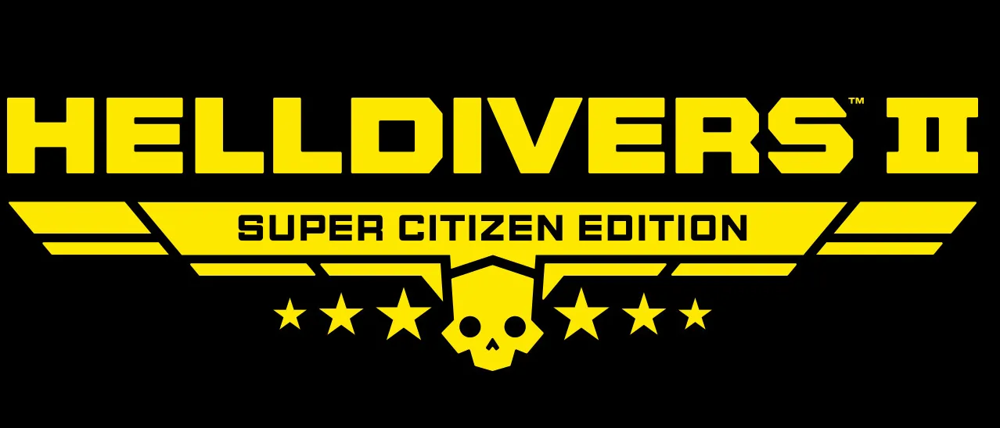

Super 公民 Edition

the Super 公民 Edition is a Deluxe edition of 绝地潜兵 2, if a player already owns the base game the 升级 to Super 公民 Edition can be bought as a DLC.
Inclusions
- 绝地潜兵™ 2
- DP-53 Savior of the Free (中型护甲 Set)
- Will of the People (Cape)
- MP-98 Knight (冲锋枪)
- 超级公民 标题
- 战略配备英雄 (Ship mini-game)
- 1 尊享战争债券 Token
获取
Super 公民 Edition was first available, as a pre-order, on 9月 22 2023, for $59.99.
升级
For those who already own the base game the 升级 to Super 公民 Edition is available for $20.
the DLC can be purchased through the following links:
PlayStation Store | Xbox Store | Steam Store
琐事
the 铁血老兵 尊享战争债券 was previously included in the Super 公民 Edition DLC. This was later replaced with a 尊享战争债券 Token which entitles the player to 1 free 尊享战争债券 of their choice. 传奇 战争债券 are not eligible.
变更历史
补丁
描述
1.003.202
2025-08-26
(Mid-补丁)
The free 铁血老兵 尊享战争债券 has been replaced with a redemption token.
1.000.000
2024-02-08
Released.